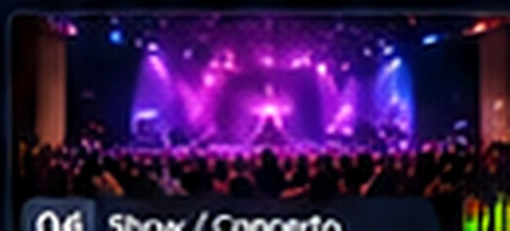
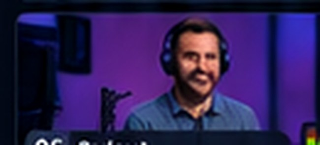

Direção com confiança
Preview à esquerda e No Ar à direita, com seleção de fontes, corte e transições em uma lógica familiar para operadores de vídeo.
Uma nova proposta de estúdio ao vivo para unir direção multicâmera, fontes remotas, identidade visual e distribuição em uma operação centralizada no navegador.
Escolha uma fonte, confira o Preview e execute o corte para o No Ar. Este é um simulador de interface, com imagens ilustrativas e sem transmissão real.
 ANDRÔMEDA LIVE / SWITCHER
ANDRÔMEDA LIVE / SWITCHER

As cenas representam presets de fontes para treinamento; não são composições reais de vídeo.
O simulador demonstra a lógica de operação. Não recebe sinais de câmera, não processa áudio real e não envia conteúdo para plataformas.
Uma plataforma desenhada para reduzir a distância entre uma produção tradicional e uma operação conectada, sem esconder os controles essenciais.
Preview à esquerda e No Ar à direita, com seleção de fontes, corte e transições em uma lógica familiar para operadores de vídeo.
Arquitetura prevista para trazer câmeras de celulares e outras origens por internet, com testes planejados para Wi-Fi e redes móveis.
GC, títulos, logotipos, cenas e composições como parte de um fluxo visual preparado para programas, eventos e transmissões.
Visão por fonte, medidores, ativação e monitoramento independentes, conforme a evolução do projeto técnico.
Planejamento de destinos RTMP/RTMPS e integrações com serviços de vídeo, sujeito aos requisitos de cada plataforma.
Layouts de operação, posições de ferramentas e perfis de trabalho previstos para que cada equipe organize a sua rotina.
O objetivo técnico é organizar as etapas de produção em um mesmo ambiente. A demonstração disponível nesta página representa apenas a etapa de corte.
Preparar entradas de câmera, celular ou vídeo conforme protocolos e integrações validados.
Configurar posições, cenas, áudio e identidade visual para o programa.
Selecionar o Preview e controlar o que entra no No Ar.
Encaminhar o programa para destinos compatíveis, quando a infraestrutura estiver pronta.
Funcionalidades desta página, sem conexão a câmeras reais:
Metas de engenharia, não promessas de disponibilidade:
O Andrômeda Live foi concebido para atender diferentes equipes e formatos de produção, conforme a evolução de seus recursos.
Programas multicâmera, entrevistas e produções recorrentes.

Congressos, palestras e apresentações transmitidas.

Podcasts em vídeo, transmissões autorais e conteúdo de marca.
Quer avaliar o Andrômeda Live no seu cenário? Registre uma manifestação de interesse para conversar sobre o projeto, o perfil da sua operação e os próximos testes.

Preencha para gerar uma mensagem que você poderá copiar e encaminhar pelo seu canal de contato.
Não por esta página. Ela oferece um simulador local da lógica de uma mesa de corte. O projeto de transmissão real e sua infraestrutura ainda exigem validações.
Não. O simulador utiliza imagens ilustrativas. A arquitetura para conectar celulares, Blackmagic Camera e protocolos profissionais é parte do plano de desenvolvimento.
Enquanto a mesa estiver visível e não houver um campo de texto em edição, Espaço executa o CUT entre Preview e No Ar; Enter aciona a transição AUTO. Os botões também funcionam por clique.
Não. A demonstração usa HTML, CSS e JavaScript e funciona diretamente no navegador. Isso não significa que a versão completa da plataforma esteja operacional na nuvem.
Ainda não. Preços, limites de câmeras, qualidade de saída, destinos simultâneos, licenciamento e níveis de suporte dependerão dos custos e testes de produção.
Estão previstos destinos compatíveis com RTMP/RTMPS, sujeitos a testes e às regras individuais de plataformas como YouTube, Facebook e Instagram. A disponibilidade não está confirmada.